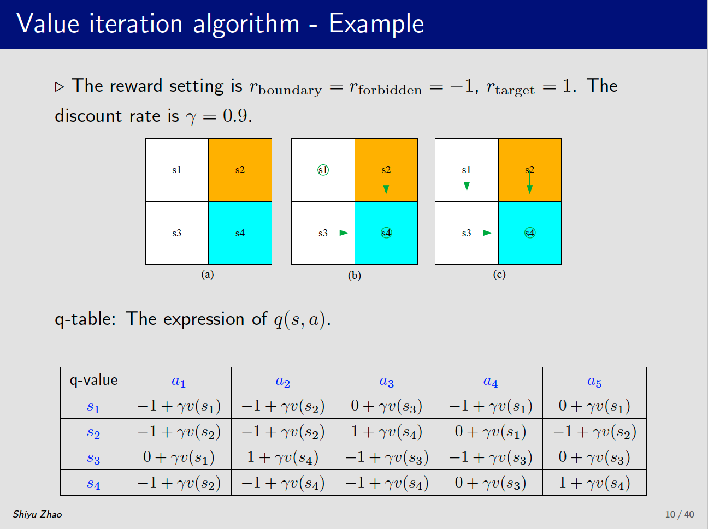
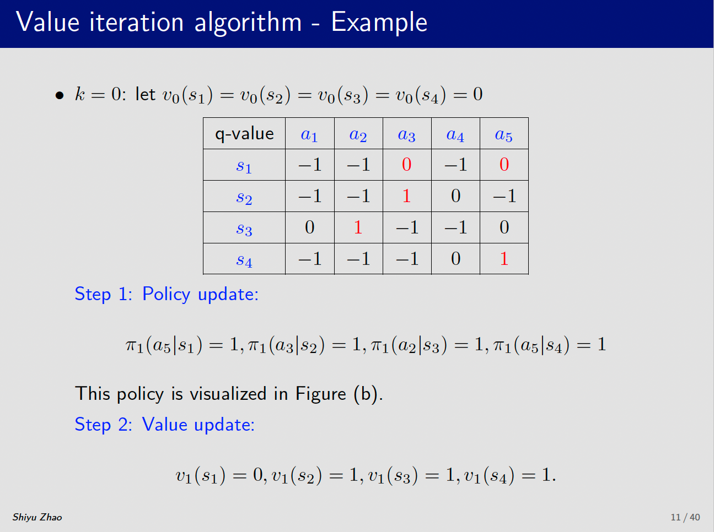
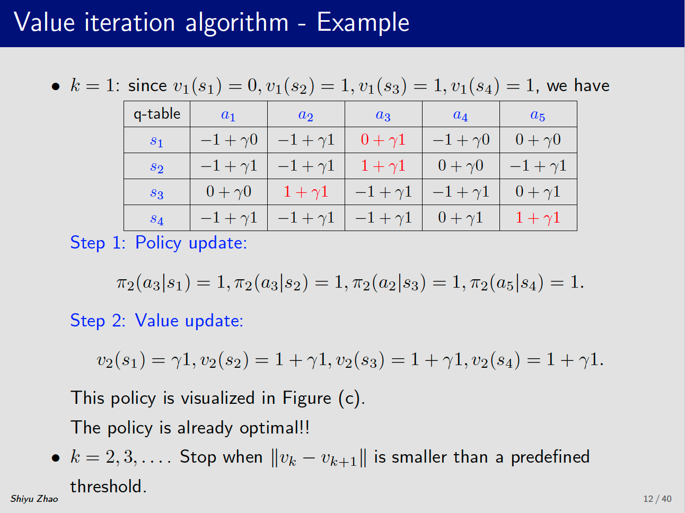
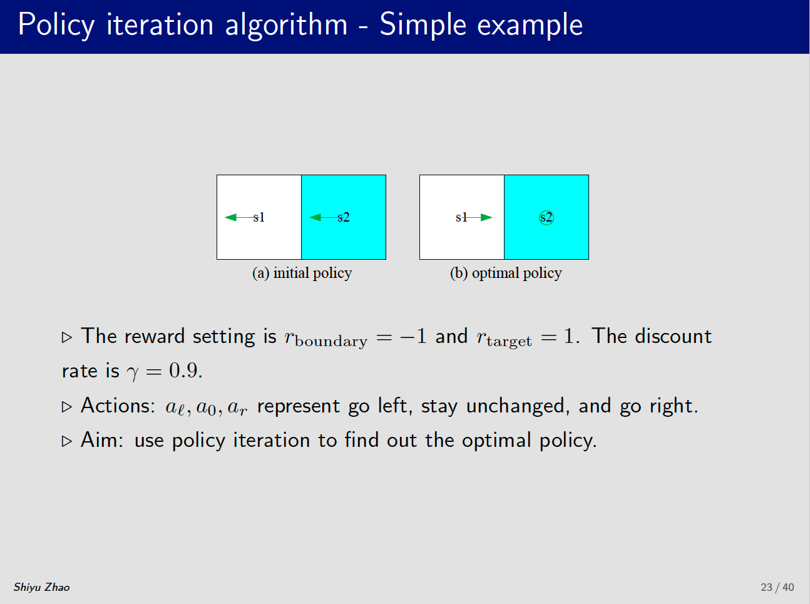
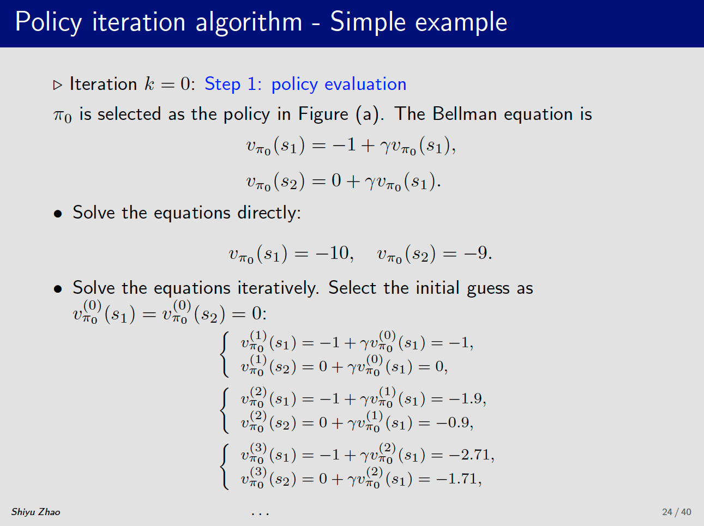
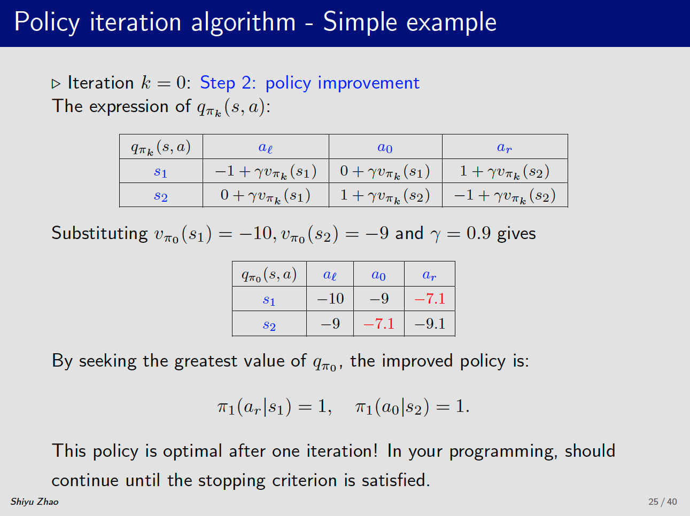
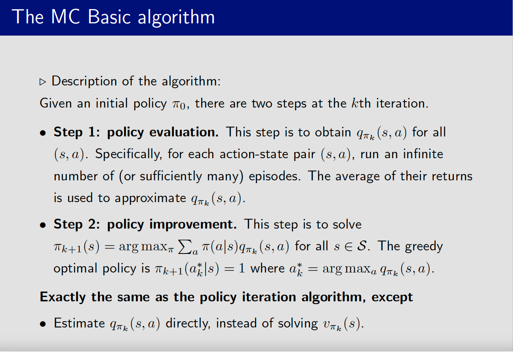

强化学习
强化学习（Reinforcement Learning, RL）的主要目的是让智能体（agent）通过与环境的交互，学习一种策略（policy），从而在不同状态下采取最优的行动，以最大化其累积的奖励（或收益）。
贝尔曼公式
Elementwise form:
$$
\begin{aligned}
v_{\pi}(s) &= \sum_{a} {\pi}(a|s) \left[ \underbrace{\sum_{r}p(r|s,a)r + \gamma \sum_{s’}p(s’|s,a)v_{\pi}(s’)}_{q_{\pi}(s,a)}\right] \\
&= \sum_{a}\pi(a|s)q_{\pi}(s,a)
\end{aligned}
$$
Action-value function:
$$
q_{\pi}(s,a) = \sum_{r}p(r|s,a)r + \gamma \sum_{s’}p(s’|s,a)v_{\pi}(s’)
$$
Matrix form:
$$
\begin{align*}
v &= r + \gamma Pv \\
&= r + \gamma v’
\end{align*}
$$
State value:
$$
v_{\pi}(s) = \sum_{a}\pi(a|s)q_{\pi}(s,a)
$$
值迭代
两个步骤：
-
策略更新：
$$
\pi_{k+1} = arg \underset{\pi}{max}(r_{\pi} + \gamma P_{\pi}v_{k})
$$$v_{k}$是已知的（迭代时可以随意赋值）

-
价值更新：选定策略后，更新state value
$$
v_{k+1} = r_{\pi_{k+1}} + \gamma P_{\pi_{k+1}}v_{k}
$$

策略迭代
-
策略评估：
$$
v_{\pi_{k}} = r_{\pi_{k}} + \gamma P_{\pi_{k}}v_{\pi_{k}}
$$
策略$\pi_{k}$是已知的（随机选择策略），求解该策略的state value时，采用迭代的方法求解。

-
策略更新：
$$
\pi_{k+1} = arg \underset{\pi}{max}(r_{\pi} + \gamma P_{\pi}v_{\pi_{k}})
$$

截断的策略迭代
策略迭代方法中，策略评估过程中，需要无穷步的迭代才能评估出策略价值，现实过程中无法实现，因此推出基于截断的策略迭代方法。
当截断步骤设置为1时，等同于值迭代。步骤为无穷时，等同于策略迭代。
Monte Carlo Method
MC Basic
主要就是将策略迭代算法变成无模型方法。
策略迭代算法中，第一步是需要评估策略价值，第二步选择$q(s,a)$最大的策略作为更新策略。
在下面的表达式中，我们不依赖于模型计算动作价值：
$$
q_{\pi_{k}}(s|a) = E[G_{t}| S_{t}=s, A_{t} = a]
$$
因此，我们可以利用Monte Carlo方法来计算动作价值：
-
从状态和动作$(s,a)$出发，在初始策略$\pi_{0}$下，生成一个轨迹。
-
计算该轨迹的价值：
$$
q_{\pi_{k}}(s|a) = E[G_{t}| S_{t}=s, A_{t} = a]
$$ -
采样多条轨迹，然后求期望
$$
q_{\pi_{k}}(s|a) = E[G_{t}| S_{t}=s, A_{t} = a] \approx \frac{1}{N}\sum_{i=1}^{N}g^{i}(s,a)
$$

缺点：
- 效率比较低，需要多次采样大量轨迹
- 轨迹长度需要足够长，否则距离较远的状态没有价值
- 没有充分利用采样轨迹信息
MC Exploring Starts
每条轨迹中包含了以其他状态和动作为起点的轨迹，该方法对这些数据进行了利用，提高了效率。
- 方法一：收集完所有轨迹后，便利所有state-action pari，计算平均价值，该方法需要等所有的轨迹收集完，效率低！
- 方法二：每收集完一个轨迹，立即计算action value，更新策略。（可以收敛）
MC $\varepsilon$-Greedy
$\varepsilon$-greedy policy:
$$
\pi(a|s)=
\begin{cases}
1-\frac{\varepsilon}{\vert\mathcal{A}(s)\vert}(\vert\mathcal{A}(s)\vert - 1) &\text{ for the greedy actions.}
\
\frac{\varepsilon}{\vert\mathcal{A}(s)\vert} &\text{ for the other }\vert\mathcal{A}(s)\vert - 1\text{ actions.}
\end{cases}
$$
Where $\varepsilon \in [0,1]$ and $\vert\mathcal{A}\vert$ is the number of actions.
- 该方法保证了greedy action总是比其他的动作概率大
- $\varepsilon$-greedy平衡了利用和探索（exploitaion and exploration）